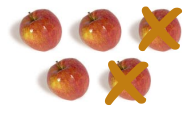
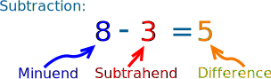

Subtraction
Subtraction is ...
... taking one number away from another.
|  | Start with 5 apples, then subtract 2, we are left with 3 apples. |
 |
|
|
This can be written: 5 − 2 = 3 |
|||
Try It Yourself
images/subtract.js
Train Yourself
You get good at subtraction with practice...
... so use Math Trainer - Subtraction to train yourself!
Subtraction Table
You can also "look up" answers for simple subtraction using this table:
| 0 | 1 | 2 | 3 | 4 | 5 | 6 | 7 | 8 | 9 | 10 | 11 | 12 | |
|---|---|---|---|---|---|---|---|---|---|---|---|---|---|
| 0 | 0 | ||||||||||||
| 1 | 1 | 0 | |||||||||||
| 2 | 2 | 1 | 0 | ||||||||||
| 3 | 3 | 2 | 1 | 0 | |||||||||
| 4 | 4 | 3 | 2 | 1 | 0 | ||||||||
| 5 | 5 | 4 | 3 | 2 | 1 | 0 | |||||||
| 6 | 6 | 5 | 4 | 3 | 2 | 1 | 0 | ||||||
| 7 | 7 | 6 | 5 | 4 | 3 | 2 | 1 | 0 | |||||
| 8 | 8 | 7 | 6 | 5 | 4 | 3 | 2 | 1 | 0 | ||||
| 9 | 9 | 8 | 7 | 6 | 5 | 4 | 3 | 2 | 1 | 0 | |||
| 10 | 10 | 9 | 8 | 7 | 6 | 5 | 4 | 3 | 2 | 1 | 0 | ||
| 11 | 11 | 10 | 9 | 8 | 7 | 6 | 5 | 4 | 3 | 2 | 1 | 0 | |
| 12 | 12 | 11 | 10 | 9 | 8 | 7 | 6 | 5 | 4 | 3 | 2 | 1 | 0 |
Example: Find 8 − 5
- find the row starting with "8"
- move along till you are under the column "5"
- and there is the number "3", so 8 − 5 = 3
Names
Other names used in subtraction are Minus, Less, Difference, Decrease, Take Away, Deduct.
The names of the numbers in a subtraction fact are:

Minuend − Subtrahend = Difference
Minuend: The number that is to be subtracted from.
Subtrahend: The number that is to be subtracted.
Difference: The result of subtracting one number from another.
Subtracting Larger Numbers
To subtract numbers with more than one digit (such as "42−25") use any of these methods, choose the one you prefer:
| Subtraction with Regrouping (also called "Borrowing") This is the method most people use! |
|
| Quick Subtraction (more complicated, but can be faster) | |
| Subtraction using Addition (also called the Complements Method) |
Worksheets
For practice try these Subtraction Worksheets
1592, 1593, 3408, 3409, 6619, 6620, 6621, 6622, 6623, 6624, 6625, 6626, 6627, 6628